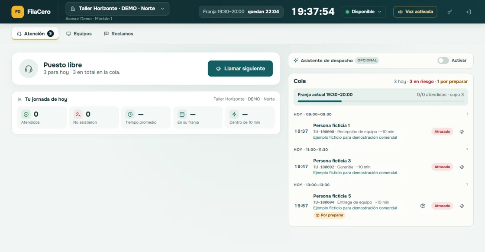

Consola de atención
Cómo preparar una entrega de servicio técnico
Un equipo reparado aún puede estar en bodega. Asigna la preparación y comprueba que está listo antes del llamado.
Qué observar en la sede
En la simulación de TecniVisión, la entrega incluye una prueba del televisor frente al cliente. Dibuja el recorrido físico desde la estantería hasta la mesa. Para cada paso apunta quién lo hace, qué necesita y qué condición le permite pasar al siguiente.
Prueba con tu equipo
Coloca una ficha ficticia en una bandeja. Una persona recibe la solicitud, otra busca el equipo y una tercera hace de cliente. Detén el ensayo justo antes del llamado y verifica qué evidencias tiene recepción de que la entrega puede empezar.

Lectura relacionada: Cómo calcular cupos por franja.
Solicitar una demo